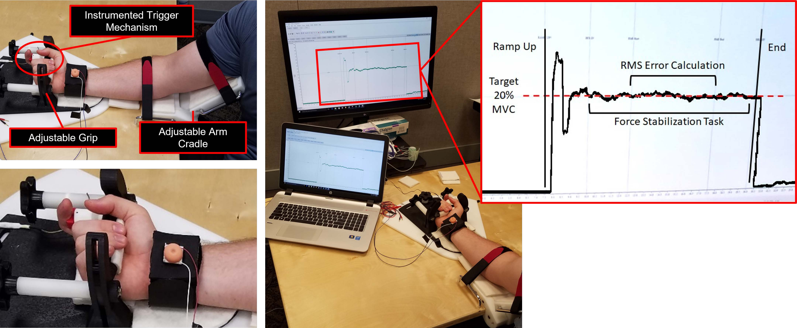
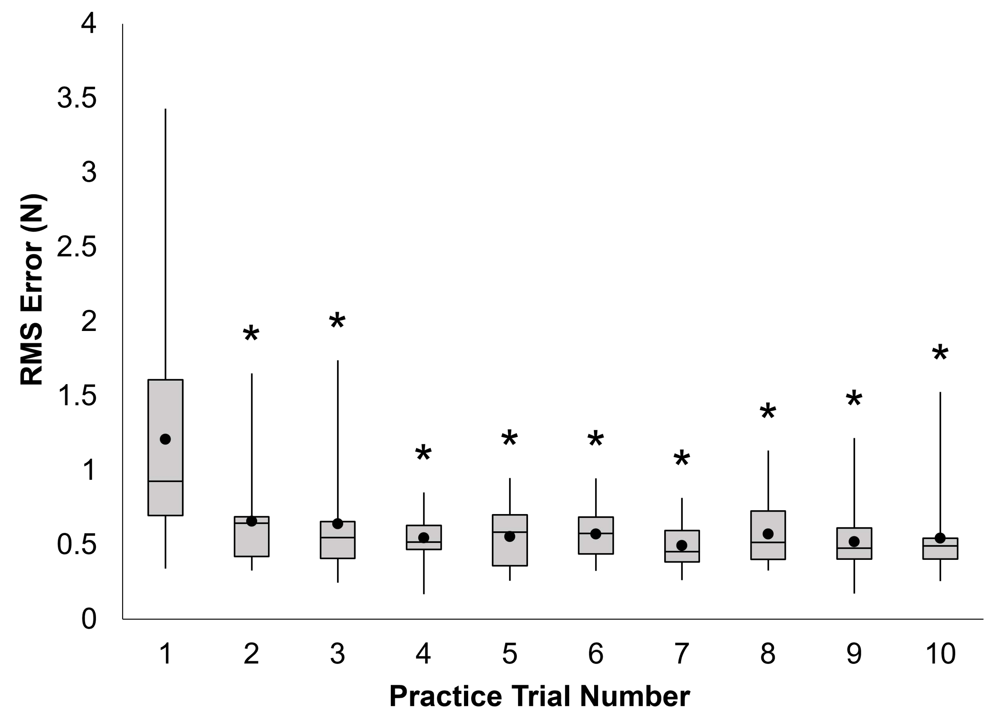
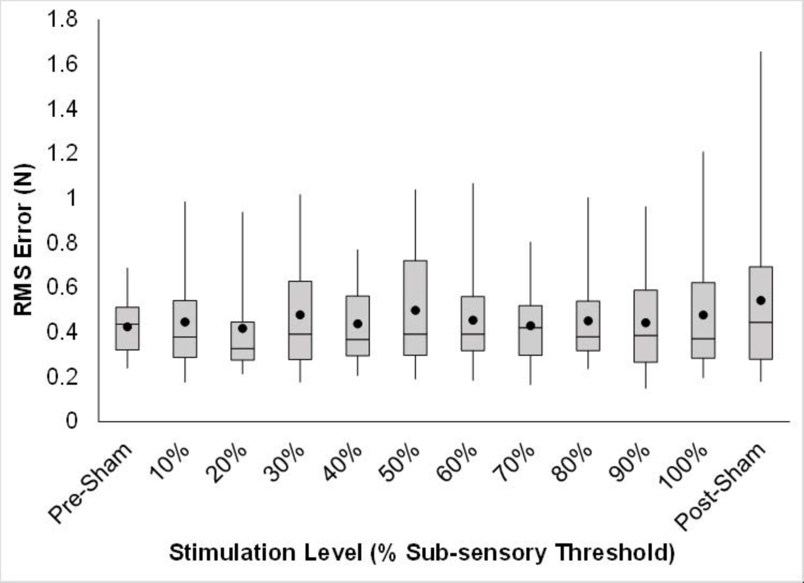
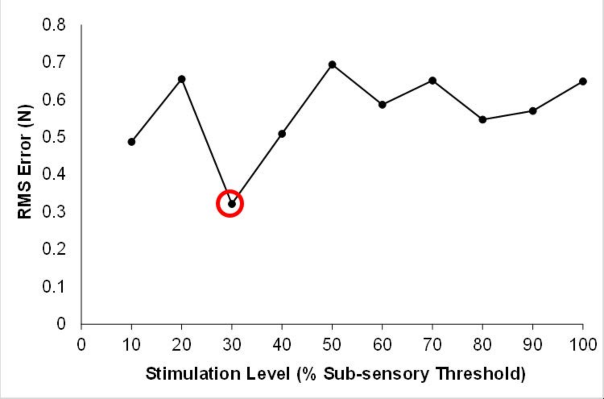
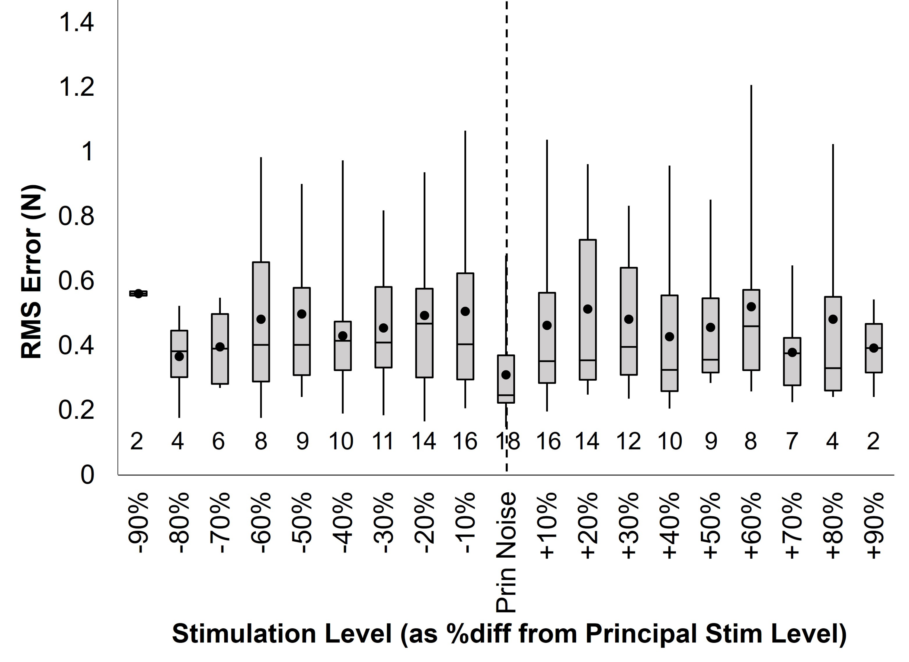
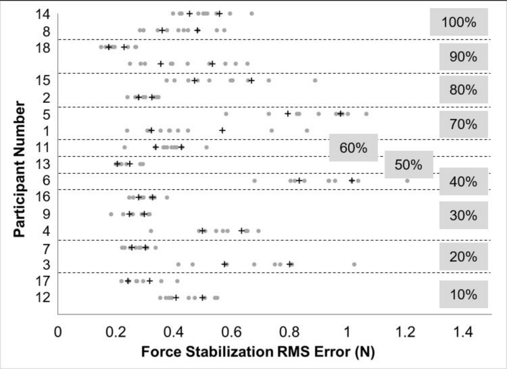

Communications in Kinesiology
Investigating Imperceptible Vibrotactile Stimulation during a Force Stability Task
Authors: Courtney A. Haynes, Matthew S. Tenan, Antony D. Passaro, Andrew J. Tweedell
Editor: Matthieu Boisgontier
DOI: 10.51224/cik.2022.41
Last Updated: February 13, 2023
Abstract
Imperceptible vibratory noise stimulation has shown to improve stability for both whole body postural control and simple motor control tasks. Noise stimulation is theorized to elicit a stochastic resonance-like effect within the somatosensory system, but there is disagreement in the literature regarding an optimal stimulation level for motor stability in humans. To explore vibrotactile stimulation, eighteen participants performed an isometric finger flexion task with visual feedback while receiving noise stimulation scaled to varying percentages of their sub-sensory threshold level. Performance was quantified as the root-mean-square (RMS) error between the target force and the actual generated force values. The goals of the study were to determine: 1) whether force stability is significantly better when receiving their custom principal
stimulation compared to other sub-sensory stimulation levels, and 2) if an individuals principal stimulation level may be predicted by either their maximal voluntary contraction (MVC) or sub-sensory threshold level. A main effect of noise stimulation was observed (p < .001) indicating significantly better performance (lower RMS error) during the force stability task when individualized principal noise stimulation was applied. At the group level, task performance was significantly improved with principal noise stimulation compared to other stimulation levels (p < .02). At the individual level, however, performance at the principal stimulation level was only significantly different than the distribution of errors for other stimulation levels for two individuals. Moderate to strong Spearman correlations (rs = .56 and rs = .65, respectively) suggest principal stimulation level increases with MVC and sub-sensory threshold.
1 Introduction
In recent decades, vibrotactile noise stimulation has received attention as a possible intervention to improve somatosensory function and supplement postural control (Galica et al., 2009; Lipsitz et al., 2015; Magalhaes & Kohn, 2010; A. Priplata et al., 2002). Although the mechanism by which this intervention is effective is still uncertain, it has been theorized that mechanical noise stimulation elicits a stochastic resonance-like effect on the somatosensory system (Collins et al., 2003; Manjarrez et al., 2002; Moss & Milton, 2003). Stochastic resonance (SR) is a naturally occurring phenomenon in which the detection of a signal in a non-linear system is improved with the application of random noise rather than degraded by it (Benzi et al., 1981; Gammaitoni et al., 1998; McDonnell & Abbott, 2009). Here, the somatosensory system serves as the non-linear system. The addition of noise may affect ion permeability of the mechanoreceptors (Bezrukov & Vodyanoy, 1995) and may also sum constructively with the non-linear input signal increasing the likelihood that any near-threshold signal level will be positively detected (McDonnell & Abbott, 2009; Moss, 2004). In other words, the application of vibrotactile noise may sharpen one’s control of body position by providing additional sensory information and increasing the body’s ability to detect and respond to changes in body orientation. Vibratory noise stimulation has shown to be effective in reducing postural sway among healthy young subjects as well as elderly subjects and patients with degraded somatosensory function due to diabetes and stroke (Collins et al., 2003; Magalhaes & Kohn, 2010; A. Priplata et al., 2002; A. A. Priplata et al., 2005). Though positive effects are most often elicited through direct stimulation of the end effector (e.g. feet to improve balance), benefits have also been demonstrated with indirect stimulation. For example, stimulation of the upper extremity in each of 4 different locations can improve grasp reaction time to perturbations at the hand (Pilwon Hur et al., 2014). Others have demonstrated that stimulation of the upper extremities improves tactile sensation at the fingers (Lakshminarayanan et al., 2015). Magalhaes & Kohn (2010) demonstrated that stimulation of the fingertip even during instances of light touch for stance support can reduce postural sway.
Much of the previous work demonstrating the efficacy of vibrotactile noise stimulation has involved short-duration standing balance trials or isometric force production with the finger. This implies that the noise stimulation effect may be observed immediately without requiring a period of acclimation. While stabilizing effects have been observed for supra-sensory application of vibratory noise (Magalhaes & Kohn, 2010), at least one study suggests that supra-sensory applications may have a destabilizing effect due to the subject’s awareness of it (Simeonov et al., 2011). Thus, the transparency of imperceptible stimulation and the immediacy of its effects make it an attractive intervention to aid stability rapidly and without distracting attention or otherwise disturbing the user.
Developing interventions which utilize imperceptible noise stimulation to aid with postural stability has been of interest for many years (Collins et al., 2003; Lipsitz et al., 2015; Magalhaes & Kohn, 2010; A. Priplata et al., 2002). Currently, however, more research is needed regarding the signal content and amplitude that elicits the greatest benefits. In some cases, research groups have elicited postural stability improvements by applying imperceptible vibrotactile noise stimulation as a prescribed percentage (70-90%) of an individual’s sub-sensory threshold level (Galica et al., 2009; Lipsitz et al., 2015; A. Priplata et al., 2002). Other research has suggested that there exists an optimal stimulation level which elicits greater performance improvements compared to stimulation at alternative levels (Manjarrez et al., 2002; Mendez-Balbuena et al., 2012; Trenado et al., 2014).
We aimed to further explore the prescription of vibrotactile noise stimulation in a directed motor control task. Participants completed a series of ramp-and-hold trials in which they attempted to maintain an isometric finger flexion force. During these trials, participants received imperceptible white Gaussian vibratory noise (≤ 500 Hz) stimulation which was scaled to specific percentages of the individual’s sub-sensory threshold level. Task performance was quantified as a root-mean-square (RMS) error between the target and the generated isometric force values. The stimulation level which resulted in the best performance was designated as the individual’s principal stimulation level. Using these results, we aimed to: 1) evaluate at the group and individual level whether performance with the principal stimulation level was significantly different than task performance at other sub-sensory stimulation levels, and 2) determine whether an individual’s principal stimulation level are related to either maximal voluntary contraction (MVC) force or sub-sensory threshold.
2 Methods
The methods described here were part of a larger study conducted to explore the varying neurophysiological effects of vibrotactile noise stimulation during a finger flexion force stability task. As a component of that study, it was necessary to identify the subthreshold stimulation level which elicited the best force stability during a ramp-and-hold finger flexion task.
2.1 Participants
Eighteen (18) young male subjects with a mean age of 25.8 years were recruited to participate in this study. Male subjects were recruited to avoid confounds due to previously reported sex differences in motor neuron discharge rate (Peng et al., 2018; Tenan et al., 2015). Participants had no history of pain, surgery, or injury to the dominant upper extremity. Participants were also free from metabolic and neurological disorders, cardiovascular dysfunction, and did not take blood thinning medications. All methods were reviewed and approved by the Institutional Review Board of the U.S. Army Research Laboratory. Participants provided verbal and written informed consent prior to participation.
2.2 Maximal Voluntary Contraction (MVC) Procedures
Participants were seated at an adjustable height desk equipped with a custom instrumented grip (Figure 1). The height of the desk was adjusted such that the participant could sit up straight with their supine forearm resting flat on the surface of the desk. A custom adjustable cradle was mounted to the edge of the table to secure the position of the upper arm and standardize arm position between participants and between trials for the same participant (Figure 1 A). The grip consisted of a plastic rod with a trigger-like mechanism instrumented with a compression load cell (LCM302-50, Omega Engineering, Inc., Stamford, CT). The angular orientation of the grip was adjustable to afford a comfortable neutral position for the wrist while the forearm and hand remained in supine position. The distance of the grip from the participant was adjusted such that the middle phalanx of the second finger engaged the trigger mechanism, and the remaining fingers curled comfortably around the plastic rod. All finger flexion tasks were completed with the hand and forearm in this standardized supine position.
Prior to completing other experimental tasks, participants completed a series of maximum exertions to determine their maximum finger flexion force. Participants were instructed to produce force only by squeezing their pointer finger against the trigger mechanism and were asked to refrain from flexing their wrist or elbow. A monitor positioned at the participant’s eye level presented visual prompts and force feedback via custom data acquisition script (Spike2, Cambridge Electronic Design Ltd., Cambridge, England, UK). Verbal encouragement was also provided during maximum voluntary contractions (MVCs). MVCs were sustained for 5 seconds each with a rest period of 1 minute between successive attempts. Force data were amplified using a bridge amplifier (Digitimer NL109, Digitimer Ltd., Ft. Lauderdale, FL) with a gain of 100 and were recorded at a rate of 1000 Hz via a Micro 1401-3 data acquisition unit (Cambridge Electronic Design Limited, Cambridge, England, UK). After three exertions, the values for each MVC were analyzed. If the three consecutive MVC values were within 10% of each other, the highest MVC was recorded as the maximum force value. If there was more than a 10% difference between the highest and lowest recorded MVC attempt, the participant was given 5 minutes of rest and another round of three MVCs were completed. This procedure continued until a maximum force value was identified. For all participants, this was accomplished in three or fewer rounds of MVC attempts (n=16 for 1 round, n=1 for 2 rounds, n=1 for 3 rounds).
Following the MVC procedures, each participant’s individual sub-sensory threshold was determined. A vibrotactile stimulator (BM1C, Tactile Labs Inc., Montreal, Canada) was secured to the wrist of the participant’s dominant hand using a neoprene strap (Figure 1 B). All participants were right-hand dominant as determined by self-report. A white Gaussian noise signal (≤ 500 Hz) was generated with a custom LabviewTM (v8.5, National Instruments Corp., Austin, TX) program. The signal was generated using Labview’s Gaussian white noise VI with a standard deviation of the Gaussian probability density function equal to 2.0. The resulting signal was low-pass filtered at 500 Hz to include primarily the range of frequencies known to stimulate cutaneous mechanoreceptors (30-350 Hz; Purves et al. (2001)). The signal amplitude ranged from +/- 1.0 with a mean of 0.0. An input of 1 V to these stimulators would produce an acceleration of approximately 2.5 G. This control signal was scaled with two different gradations: 5-100% of full-scale in 5% increments and 0.5-5% full scale in 0.5% increments. The second scaling gradation was necessary to provide a finer resolution for the identification of sensory threshold for participants’ whose threshold was under 5% of full scale (n=4). Similar white noise has been shown previously to improve performance of isometric force production tasks and includes the frequencies to which biological proprioceptors in the skin are sensitive (Trenado et al., 2014). The signals were transmitted to the wrist through the Micro 1401-3 unit via a custom Spike2 interface and delivered by the stimulator. Stimulation signals were presented for a duration of 5 seconds, and the magnitude of the signals and the time between successive stimulation signals was unknown to the participant. With eyes closed and hearing occluded with ear plugs, participants were asked to provide a “thumbs up” with their non-dominant hand when they detected stimulation. Researchers began by applying noise levels likely to be supra-sensory to confirm the participant understood instructions and were able to discern the vibratory stimulation. After approximately 5 trials of supra-sensory stimulation, the researcher applied a stimulation level which was expected to be on the cusp of perception. If the participant provided a positive response to the stimulation, the researcher followed by presenting the next 3 lower levels of noise stimulation. If the participant failed to provide a positive response to a stimulation, the researcher would apply noise two levels higher than that of the failed stimulation. The researcher would then proceed through the next 3 lower levels of noise stimulation. This process was repeated and afforded confirmation of threshold levels by ensuring that the participant would consistently report positive responses to levels above threshold and fail to detect other stimulation levels below threshold. The highest stimulation that the participant failed to detect three consecutive times was recorded as their sub-sensory threshold.
2.3 Principal Noise Stimulation Protocol
As this protocol included only a finite set of stimulation levels and optimal stimulation was not confirmed, the level eliciting the best performance was referred to as an individual’s principal stimulation level. The principal noise stimulation level was determined using a ramp-and-hold finger flexion task. Participants were presented with a visual display of the force applied to the trigger mechanism (Figure 1 C). A visual cue would instruct the participant to gradually increase the force applied to the trigger over a period of 2.5 seconds to a maximum force of 20% MVC and maintain this exertion for 10 seconds. Participants were instructed to maintain the 20% MVC as steadily as possible by tracing the visually presented 20% MVC target force with the force profile generated by finger flexion (Figure 1 D). Ten practice trials were completed prior to data collection. Errors from these practice trials were retained to be included in analysis. To determine the principal sub-sensory stimulation level, noise signals were generated corresponding to 10-100% of their sub-sensory threshold. Participants completed 13 data trials in which they completed the ramp-and-hold task with or without stimulation applied to the wrist. The first and last trials were always sham trials in which no stimulation was applied. The sequence in which each noise signal (10, 20, 30, 40, 50, 60, 70, 80, 90, and 100% sub-sensory threshold) was applied was randomized for each participant. Following the initial sham trial, a block of 5 ramp-and-hold trials were completed with different levels of stimulation. Participants then rested for five minutes. The first trial following the break was a sham trial, then 5 more ramp-and-hold trials were completed with the remaining stimulation levels followed by the final sham trial. In total, 13 trials were completed including the initial sham trial, the first block of stimulation trials (5), a second sham trial, the second block of stimulation trials (5), and a final sham trial.
2.4 Dependent Measures
Force stability, the primary measure of performance, was defined as the RMS error of the difference between actual force and the target force of 20% MVC. This value was calculated during the middle 5 seconds of the sustained MVC hold for each trial resulting in a total of 13 values per participant. The central 5 seconds of the force stability data were selected for analysis because this window of time was free from overshoot and undershoot artifacts that occurred near the ramp portions of the trial and were considered the period of best sustained performance. The stimulation level corresponding to the lowest force stabilization RMS error (best performance) was recorded as the participant’s principal noise stimulation level.
2.5 Statistical analyses
RMS errors from the practice trials were analyzed using a one-way repeated measures ANOVA in which trial number served as the single factor. Post hoc Tukey analysis was conducted to compare performance during each pair of trials, and statistical significance was adjusted for multiple comparisons. This analysis of practice data was used to ensure that any ‘learning effect’ of the trials were mitigated and provided the researchers with a stable set of practice trials for use when comparing errors obtained during noise stimulation trials. The practice vs. stimulation assessments used a mixed-effects repeated measures ANOVA analysis with trial type (practice or stim) as a fixed effect and subject as a random effect. This analysis was used to determine whether stimulation had a systematic effect on task performance.
RMS error data were analyzed at the group level using a multilevel model with stimulation level and subject as fixed and random effects, respectively. Post hoc statistical comparisons were made using Dunnett’s test to correct for multiple comparisons (Dunnett, 1955). At the individual level, one-sided Dixon Q tests were used to examine whether performance during the identified principal stimulation level was significantly different than the performance at all other levels of stimulation. Finally, Spearman correlations were used to identify whether relationships exist between threshold, MVC, and principal stimulation values. All statistical analyses were conducted with R software (3.5.0, R Foundation for Statistical Computing). Effect sizes were calculated using Cohen’s d with pooled standard deviation.
3 Results
The MVC recorded for all participants ranged from 32.3 N to 188.2 N with a group mean and SD of 93.2±39.2 N. Input voltages identified as the sub-sensory threshold ranged from 0.02 V to 0.35 V with a group mean of 0.11±0.09 V. This mean input voltage corresponds to an acceleration range of 0.064-0.275 G across the frequency spectrum of the stimulation signals. Despite the wide range of input voltages identified as individual sub-sensory threshold levels, 9 participants (50%) exhibited a sub-sensory threshold at an input voltage of 0.05 V (0.029 – 0.125 G acceleration).
3.1 Analyses of Baseline vs. Stimulation Trials
All participants completed 10 practice trials, and 3 participants completed an eleventh practice trial per their request. Repeated measures analysis revealed a main effect of trial number (F(10,148) = 8.15, p < .0001). Post hoc analyses for multiple comparisons showed that the RMS errors for the first trial were significantly greater (p < .001, d = 0.87 to 1.21) than RMS errors during all other trials (Figure 2). Significant differences in performance between other pairs of trials were not found.

To further investigate practice performance, the best practice trial was identified for each subject, and the remaining trials were identified as “best-i” or “best+i” where “i” preserved the sequence in which they were collected relative to the best trial. For example, if a subject’s best performance was recorded for their fourth practice trial, this trial was identified as “best”. Practice trials 1-3 were labeled best-3, best-2, best-1, and trials following the best performance were labeled as best+1, best+2, etc. Using a linear mixed model with trial as a within-subjects factor and subject as a random effect, RMS error was compared between different trial levels. Post-hoc planned comparisons revealed significant differences (ranging from t(145) = -3.14, p = 0.035 to t(146) = -6.56, p < 0.0001) between the best practice trial and trials identified as best-9, best-8, best-7, and best-5. These results indicate that the trials following the first 5 practice trials best identify a performance plateau. Per these results, a subset of practice trials 6-10 or 6-11 where applicable were identified as the trials describing plateaued task performance during practice. This plateau subset would be used in subsequent analyses to draw comparisons to the stimulation trials.
3.2 Analyses of Stimulation Trials
Group-level analyses of force stabilization RMS errors were first evaluated by comparing performance at each stimulation level. Performance at each stimulation level varied greatly between participants (Figure 3). Multilevel model analyses were conducted with stimulation level as a fixed effect and subject as random intercept effect. No differences were observed between the RMS errors for the stimulation levels or the pre- or post-sham trials (F(11,187) = 1.45, p = .15). The largest RMS error magnitude (0.54 N) and standard error (0.084 N), however, occurred for the final sham trial (post-sham) following the completion of noise stimulation trials. To examine whether this increase is due to a fatigue effect, a Pearson correlation was calculated between RMS error and the sequential trial number. No fatigue-related time-on-task effects were found (r(16) = .12, p > .6).

To determine whether performance during stim trials differed from performance during practice, the RMS errors for the practice plateau subset were compared to the RMS errors during all stimulation trials. A one-way ANOVA analysis was completed with trial type as a within-subjects effect (two levels = practice, stim) and subject as a random effect. A log transform was used to satisfy the normality assumption, and results indicated no statistically significant difference (F(1,17) = 1.189, p = 0.291) between the mean RMS error during practice (0.54±0.17 N) and during all stim trials (0.49±0.13 N).
While the mean performance for all stim trials did not differ from practice performance, the primary interest of this study was whether individualized principal noise stim would result in improved performance. An individual’s principal noise stimulation level was assigned as the noise stimulation trial for which they exhibited the best force stabilization performance (lowest RMS error). Figure 4 presents the RMS errors recorded for a single participant exhibiting principal stimulation at 30% sub-sensory threshold.
One-way ANOVA analyses were repeated comparing RMS errors between the plateau subset and the performance during individual principal noise stimulation. A significant main effect of trial type was found (F(1,16) = 26.313, p = 0.0001, d = 0.41). RMS error during principal noise stimulation (0.35±0.11 N) was significantly less than the RMS error during practice trials (0.54±0.17 N).
Principal stimulation levels varied widely across the group such that each sub-sensory stimulation level was found to be the principal stimulation level for at least one participant. To further examine the relationship between RMS errors and stimulation level for the group, the data was restructured such that the RMS error corresponding to an individual’s principal stimulation level was assigned the label “prin noise”, and their RMS errors associated with the remaining stimulation trials were labeled as a positive or negative percent difference (%diff) from the individual’s principal stimulation level. For example, for the data presented in Figure 4, the error at 30% sub-sensory threshold was identified as “prin noise”, and the errors at 10, 20, 40, and 50% were identified as 20, 10, +10, and +20 %diff, respectively, from the principal stimulation level. Once RMS errors for all participants were relabeled using this convention, the errors were averaged for the principal stimulation level and for each %diff stimulation level (Figure 5). The result of this data presentation is that the number of values contributing to the mean and error calculations are different between stimulation levels.


Group-level analysis was then conducted to determine if performance at the principal stimulation level was significantly better than performance at other stimulation levels expressed as %diff from this principal level. Model estimated marginal means, standard error, and confidence intervals are provided for each stimulation level in Table 1. When examining the RMS errors as a function of %diff from principal stimulation, the best performance as a group was observed at the principal stimulation level. Multilevel analyses revealed that the model estimate RMS error recorded for the principal stimulation level was significantly different (F(18,145) = 3.06, p < .0001) than the RMS errors for a number of stimulation levels using Dunnett’s test (Dunnett, 1955) to correct for multiple comparisons. For stimulation levels ranging from -60% to +60%, all but the -30% level had t scores ranging from 3.28 ≤ t(145) ≤ 5.46 and significance levels of p ≤ .019 (d = 0.71 to 1.04). The stimulation level of -30% fell just outside the cutoff for significance with t(145) = 2.92, p = .053. Estimated RMS errors at stimulation levels of -90% and +80% were also significantly different than mean RMS error at the principal stimulation level (t(145) = 3.08, p = .035, d = 1.85 and t(145) = 3.61, p = .007, d = 0.89, respectively). In addition to the differences in estimated RMS values, the variation in performance as indicated by the box plot sizes also suggests that RMS errors at the principal stimulation level had a narrower distribution than errors recorded for other stimulation levels. To further validate this principal noise stimulation level, an identical analysis was performed on the errors measured during the practice trials. When completing the same ANOVA and post-hoc analyses on the ordered practice trial errors, the performance during the best practice trial was only significantly better than the first five attempts (t(146) = -6.57 to t(145) = -3.14, p = <0.0001 to 0.035, d = 2.46 to 0.92). This lent further support to the identification of the principal noise level as a special case.
| Stimulation Level | Estimated Marginal Mean (N) | Standard Error (N) | df | Lower 95% CI | Upper 95% CI |
|---|---|---|---|---|---|
| -90% | 0.5475 | 0.0882 | 109.15 | 0.3726 | 0.7224 |
| -80% | 0.4177 | 0.0714 | 64.09 | 0.2751 | 0.5603 |
| -70% | 0.4352 | 0.0647 | 46.49 | 0.3050 | 0.5654 |
| -60% | 0.4586 | 0.0610 | 37.81 | 0.3351 | 0.5822 |
| -50% | 0.4850 | 0.0597 | 34.96 | 0.3638 | 0.6063 |
| -40% | 0.4410 | 0.0586 | 32.68 | 0.3217 | 0.5603 |
| -30% | 0.4229 | 0.0577 | 30.83 | 0.3051 | 0.5406 |
| -20% | 0.4844 | 0.0557 | 27.02 | 0.3701 | 0.5988 |
| -10% | 0.4955 | 0.0548 | 25.37 | 0.3828 | 0.6084 |
| Prin Noise | 0.3106 | 0.0541 | 24.14 | 0.1989 | 0.4222 |
| +10% | 0.4653 | 0.0548 | 25.37 | 0.3525 | 0.5781 |
| +20% | 0.4992 | 0.0557 | 27.02 | 0.3849 | 0.6136 |
| +30% | 0.4634 | 0.0569 | 29.32 | 0.3470 | 0.5798 |
| +40% | 0.4467 | 0.0586 | 32.67 | 0.3274 | 0.5660 |
| +50% | 0.4706 | 0.0597 | 34.96 | 0.3493 | 0.5918 |
| +60% | 0.5083 | 0.0610 | 37.82 | 0.3847 | 0.6318 |
| +70% | 0.4309 | 0.0626 | 41.50 | 0.3045 | 0.5773 |
| +80% | 0.5160 | 0.0713 | 63.98 | 0.3735 | 0.6585 |
| +90% | 0.4831 | 0.0882 | 109.07 | 0.3082 | 0.6579 |

Individual one-sided Dixon Q tests were conducted to determine whether the minimum RMS error recorded for a given participant could be identified as significantly different from the group of RMS errors recorded for other stimulation levels. Two participants (participants 4 and 11) demonstrated RMS errors that were significantly lower (Q = .50, p = .039 and Q = .54, p = .024, respectively) than the remaining distribution of errors recorded for the other stimulation levels. To further inspect the distribution of errors for each participant, parametric 95% confidence intervals were calculated for each individual (Figure 6). The difference between a participant’s lowest RMS error and their lower 95% confidence limit ranged from 0.005 N – 0.21 N with a group mean difference of 0.08±0.06 N. As stated previously, no consistency was observed in the sub-sensory stimulation level eliciting the best force stabilization (Figure 6). Among the 18 participants, each sub-sensory stimulation level was found to be the principal level for at least one individual (Figure 6).
Following the force stabilization trials, the input voltages identified as the mean principal noise stimulation level had a range of 0.005-0.16 V with a group mean of 0.06±0.05 V. This mean principal stimulation voltage corresponded to acceleration magnitudes of 0.035-0.15 G across the frequency spectrum of the stimulation signals. To examine whether significant relationships exist between threshold, principal stimulation level, and MVC values, Spearman correlations were calculated for each pair of measures. Spearman, rather than Pearson, correlations were used due to the lack of normality for the threshold and principal stimulation level measures as determined by the Shapiro-Wilk test (W = .80, p = .002 and W = .83, p = .005, respectively). Moderate but significant Spearman correlations were observed between threshold and MVC (rs = .49, p = .041) and principal stimulation level and MVC (rs = .56, p = .016). Increases in MVC are associated with increases in both threshold and principal stimulation level. A strong significant Spearman correlation was observed between threshold level and principal stimulation level (rs = .65, p = .003).
4 Discussion
The MVC measures recorded for most (n=15) participants were largely similar in magnitude to the maximum isometric finger forces reported by Cort & Potvin (2011). The lower (32.2 N) and upper bounds (168.7 N and 188.2 N), however, were somewhat extreme for single finger flexion. In both instances, the experimental apparatus may account for these variations. Our setup required participants to grip the trigger mechanism with the middle phalanx of the second finger, and the trigger was custom printed using a rigid thermoplastic. While a more proximal application site is reported to increase maximum isometric finger force (Cort & Potvin, 2011), the contact between the finger and trigger could be uncomfortable to some. It’s likely that the perceived discomfort of the apparatus may have limited a participant’s MVC. Alternatively, other participants may have found it difficult to isolate the finger flexor exertion and involved other muscles (i.e. biceps). While their MVCs may be extreme, these participants were retained in the data set because they otherwise met the requirement for MVC determination. In each case, the MVC was a consistent and reproducible value for the participant under our experimental conditions, and they were able to complete the ramp-and-hold trials reliably.
It is also worth acknowledging here that the stimulation in this study was applied to the wrist rather than at the point of force application. This choice was made in support of a larger motor control study (Tenan et al., 2019) that followed the stimulation selection presented here. In that study, participants completed a series of force stability tasks during which motor unit firing, electroencephalography, and reflex response data were recorded. The stimulation was applied at the wrist to stimulate muscle spindle receptors and to ensure that the stimulation was part of the afferent/efferent feedback loop of the flexor digitorum muscle controlling the finger. Results suggested that behavioral changes observed during vibrotactile stimulation are likely due to tonic vibration reflex in the muscle tendons (Tenan et al., 2019).
In general, group level performance of a finger force stability task was significantly improved when participants received stimulation corresponding to their individually identified principal stimulation level. When performance was assessed at an individual level, however, RMS errors during principal stimulation trials were only significantly different from the distribution of errors across other noise stimulation trials for 2 participants. Principal stimulation levels were shown to be highly variable, and this study suggests that the performance improvement compared with other levels of stimulation were marginal for most individuals. In fact, when comparing all stim trials to the practice plateau, significant differences in performance were not observed. Performance at the principal noise stimulation level showed improvement at the group level but may in fact provide only marginal improvement over performance during other stim levels.
Despite a broad range in MVC measures and sub-sensory thresholds (0.02 to 0.35V), half of the participants (9 of 18) exhibited their sub-sensory threshold level at 0.05 V. The reason for the cluster of threshold levels at 0.05 V, however, is unclear. Noise signals were evaluated for threshold in increments of 0.05 V. The next highest noise magnitude was 0.10 V. It may be that the acceleration magnitudes imparted by the stimulator between input voltages of 0.10 and 0.05 V are very near the central distribution of perception. The 0.05 V step between these two input voltages may have been too coarse to specifically pinpoint the input voltage level at which sensation ceases. Future studies may utilize finer steps between input voltages to identify sub-sensory threshold levels.
Individual performance during the finger flexion force stability task with a specific noise stimulation level varied substantially. The variability was so large that, when averaged among all participants, the presence of any group-level principal stimulation level was obscured. Similar findings were reported by Manjarrez et al. (2002) who noted considerable variability in the shape of electroencephalography signal-to-noise ratio profiles obtained for different participants receiving the same input noise levels. Individual responses to noise stimulation appear to be highly variable and are not easily or effectively described via standard summary statistics. Mulavara et al. (2015) also found similar results with electrical vestibular stimulation. Although they reported a group average optimal stimulation level equivalent to 35% of perceptual threshold, individuals exhibited optimal stimulation levels ranging from 8-100% of perceptual threshold. Additionally, using electrical vestibular stimulation, Goel et al. (2015) reported that during each of 4 studies, only a subset of participants were considered “responsive” to stimulation. Large inter-subject variability and the existence of “non-responders” to stimulation make the study of optimal noise stimulation levels challenging. Of note in the present study, however, is that the largest RMS error and largest variability occurred for the final sham trial. This suggests that noise stimulation, regardless of its level, may have imparted some degree of stabilization in the preceding trials, and its absence during the final sham trial may have resulted in poorer performance across participants. This finding raises a concern not often addressed in the noise stimulation literature. It may be relevant to quantify the effects of noise stimulation cessation.
Two different attempts were made to determine if the principal level of stimulation improved stability. The first analysis performed a partial pooling of all subject’s data using a multilevel model with the data restructured and centered at each individual’s principal stimulation level. This analysis revealed that there did appear to be a statistical difference between the level of stimulation eliciting the greatest stability and other levels of stimulation. These results support previous research indicating that specific noise levels can enhance motor performance (Manjarrez et al., 2002; Mendez-Balbuena et al., 2012). The second analysis considered individual subject data and attempted to determine if the behavioral outcome (i.e., RMS error) from the principal stimulation level was a statistical outlier compared to all other trials. These results failed to show that the principal stimulation level was an outlying case for most subjects. For only two participants was the RMS error during their principal noise trial significantly lower than the error during other trials. For these individuals, principal stimulation level appears to have produced better motor performance. It is noted, however, that principal stimulation levels resulted in force stabilization RMS errors which fell outside the 95% CI for all subjects. It is possible that not enough data points were collected to effectively determine if stability during the principal stimulation level resides outside the expected performance distribution of at other stimulation levels. Future research in this area should obtain data at more points along the continuum of stimulation or perform repeated testing on the same stimulation levels to confirm the selection of a principal or optimal noise level.
As reported previously (Manjarrez et al., 2002; Mendez-Balbuena et al., 2012), the best performance stimulation level for individuals varied widely, and RMS error curves exhibited a variety of shapes. Manjarrez et al. (2002) arbitrarily defined 3 bands of noise and classified their participants as responders to either low, intermediate, or high levels of noise stimulation. The majority of their participants exhibited optimal performance within the high range of noise stimulation. Using the same technique, we would define our low, intermediate, and high noise levels as bands consisting of 10-30%, 40-70%, and 80-100%, respectively. Principal noise in our study, however, was more evenly distributed among the three identified bands of noise with 7 participants exhibiting principal noise stimulation in the low band, 5 in the intermediate band, and the remaining 6 in the high band. Currently, research employing vibratory noise stimulation often applies noise at a specific percentage (~70-90%) of sub-sensory threshold level (Galica et al., 2009; Lipsitz et al., 2015; A. Priplata et al., 2002). Results from these studies clearly indicate that this arbitrary noise level does elicit a stabilizing effect compared to no stimulation. However, this commonly used stimulation level may actually only be eliciting the optimal stabilization effects for about 1/3 of the participants. Greater stabilization may be possible if optimal stimulation levels can be identified and applied; however, this level of customization may be unnecessary in some motor tasks or provide only marginal benefits over an arbitrary stimulation level.
Studies using designs similar to ours have indicated that an optimal level of noise is required to obtain a maximal effect of noise stimulation (Manjarrez et al., 2002; Mendez-Balbuena et al., 2012; Trenado et al., 2014). Our results, however, do not exhibit a robust optimal noise phenomenon with a predictable inverted-U pattern. While the optimal noise pattern is a classical hallmark of stochastic resonance within a non-linear system, the present study focused on two different systems: the somatosensory and the motor systems. It is possible that the SR-like benefit in the somatosensory system does not translate directly into the motor system, which is receiving numerous neurological inputs to generate force. The two previous study designs showing an inverted-U optimal noise pattern were also focused on fingertip displacement (Manjarrez et al., 2002; Mendez-Balbuena et al., 2012). It is possible that some characteristics of noise stimulation on motor behavior are only able to be differentiated within specific paradigms and not widely generalizable to other tasks.
As a final quantitative analysis of the present data, Spearman correlation coefficients were calculated for MVC, sub-sensory stimulation thresholds, and optimal noise stimulation level. Spearman correlations determine how well the rank order of one variable corresponds to the rank order of another. Strong correlations indicate that as the rank of one variable increases, the rank of the other responds in a predictable way following a linear or non-linear function. Significant moderate to strong correlations were found suggesting that a higher MVC and a higher sub-sensory threshold level are associated with higher principal stimulation levels. A larger MVC was also associated with a higher sensory threshold. These relationships are relevant when customizing stimulation. Individuals with a larger MVC magnitude likely warrant a greater stimulation magnitude for customized noise stimulation. However, the quantitative relationship between principal noise stimulation, sub-sensory threshold level, and finger flexion MVC was not identified here. Simplifying the selection of principal noise stimulation level would expedite its use in research and in clinical applications. More research is needed to determine if in fact an optimal stimulation level is essential for clinical interventions and, if so, whether an individual’s optimal stimulation level may be effectively identified via a more easily quantified measure such as strength or perceptual threshold.
5 Limitations
A primary limitation of this study was the completion of only a single trial for each noise stimulation level. While other studies have been conducted in a similar fashion (Manjarrez et al., 2002; Mendez-Balbuena et al., 2012; Trenado et al., 2014), collecting additional trials would have provided a measure of performance variability for each noise level and afforded reliability analyses for the principal stimulation level. Additionally, there is some uncertainty regarding the duration of the effects of stimulation. For this study, participants received a particular level of stimulation for the duration of a given trial. It is unclear whether exposure time to imperceptible stimulation has an influence on its behavioral effects. Lastly, sensory threshold was quantified using scaled white Gaussian noise transmitted through the stimulator. While this enabled a direct translation between the measurement of sensory threshold and the application of desired subsensory noise, this study may have benefitted from the use of the Semmes-Weinstein monofilament test to provide a more standardized measure of tactile sensitivity. Such a measure could have identified the sensory threshold with greater accuracy and resolution than the approach employed here and allowed for more customized subsensory stimulation.
6 Conclusions
Despite tightly controlling other signal properties and varying only noise amplitude, the principal stimulation level varied considerably between individuals. At the group level, vibrotactile stimulation applied at a customized principal noise level resulted in better force stabilization performance compared to practice trials and other stimulation levels. At the individual level, however, outlier analyses failed to report significant differences in individual performance at the principal stimulation level compared to the remaining trials. This may indicate that, while principal stimulation provides the best performance, its benefits may only marginally outweigh noise stimulation at an arbitrary imperceptible level when focusing on fingertip displacement. Additional work is needed to determine the reliability of the principal noise stimulation levels identified using this procedure. Further, this work focuses on a simple, controlled fine motor task, and these results may not apply to more dynamic or whole-body physical tasks. More work is needed is explore physical task performance during exposure to varied levels of vibrotactile stimulation and to determine the best implementation of vibrotactile noise for stability or assistive devices.
7 Additional Information
7.1 Data Accessibility
All data and analysis code used for this manuscript are available at https://osf.io/cah3j.
7.3 Conflict of Interest
The authors declare that this research was conducted independently and free of any personal or financial relationships that could be construed as a conflict of interest.
7.4 Funding
This work was funded by the Department of Defense Human Systems Integration (Cybernetics) research line at the U.S. Army Research Laboratory (74-A-HRCYB).
7.5 Acknowledgments
Many thanks to Mr. Mike Kosinski and Mr. Dave Kuhn for their hard work designing and fabricating the instrumented grip apparatus and the arm cradle used for data collection. Thanks also to Dr. J. Cortney Bradford, Mr. Paul Riggs, and the facilities staff at the Army Research Laboratory Mission Impact through Neuro-inspired Design (MIND) lab for the use of their equipment and lab facilities.
8 References
Benzi, R., Sutera, A., & Vulpiani, A. (1981). The mechanism of stochastic resonance. Journal of Physics A: Mathematical and General, 14(11), L453–L457. https://doi.org/10.1088/0305-4470/14/11/006
Bezrukov, S. M., & Vodyanoy, I. (1995). Noise-induced enhancement of signal transduction across voltage-dependent ion channels. Nature, 378(6555), 362–364. https://doi.org/10.1038/378362a0
Collins, J. J., Priplata, A. A., Gravelle, D. C., Niemi, J., Harry, J., & Lipsitz, L. A. (2003). Noise-enhanced human sensorimotor function. IEEE Engineering in Medicine and Biology Magazine, 22(2), 76–83. https://doi.org/10.1109/memb.2003.1195700
Cort, J. A., & Potvin, J. R. (2011). Maximum isometric finger pull forces. International Journal of Industrial Ergonomics, 41(2), 91–95. https://doi.org/10.1016/j.ergon.2010.12.008
Dunnett, C. W. (1955). A Multiple Comparison Procedure for Comparing Several Treatments with a Control. Journal of the American Statistical Association, 50(272), 1096–1121. https://doi.org/10.1080/01621459.1955.10501294
Galica, A. M., Kang, H. G., Priplata, A. A., D’Andrea, S. E., Starobinets, O. V., Sorond, F. A., Cupples, L. A., & Lipsitz, L. A. (2009). Subsensory vibrations to the feet reduce gait variability in elderly fallers. Gait & Posture, 30(3), 383–387. https://doi.org/10.1016/j.gaitpost.2009.07.005
Gammaitoni, L., Hänggi, P., Jung, P., & Marchesoni, F. (1998). Stochastic resonance. Reviews of Modern Physics, 70(1), 223–287. https://doi.org/10.1103/revmodphys.70.223
Goel, R., Kofman, I., Jeevarajan, J., De Dios, Y., Cohen, H. S., Bloomberg, J. J., & Mulavara, A. P. (2015). Using Low Levels of Stochastic Vestibular Stimulation to Improve Balance Function. PLOS ONE, 10(8), e0136335. https://doi.org/10.1371/journal.pone.0136335
Lakshminarayanan, K., Lauer, A. W., Ramakrishnan, V., Webster, J. G., & Seo, N. J. (2015). Application of vibration to wrist and hand skin affects fingertip tactile sensation. Physiological Reports, 3(7), e12465. https://doi.org/10.14814/phy2.12465
Lipsitz, L. A., Lough, M., Niemi, J., Travison, T., Howlett, H., & Manor, B. (2015). A Shoe Insole Delivering Subsensory Vibratory Noise Improves Balance and Gait in Healthy Elderly People. Archives of Physical Medicine and Rehabilitation, 96(3), 432–439. https://doi.org/10.1016/j.apmr.2014.10.004
Magalhaes, F. H., & Kohn, A. F. (2010). Vibratory noise to the fingertip enhances balance improvement associated with light touch. Experimental Brain Research, 209(1), 139–151. https://doi.org/10.1007/s00221-010-2529-3
Manjarrez, E., Diez-Martıńez, O., Méndez, I., & Flores, A. (2002). Stochastic resonance in human electroencephalographic activity elicited by mechanical tactile stimuli. Neuroscience Letters, 324(3), 213–216. https://doi.org/10.1016/s0304-3940(02)00212-4
McDonnell, M. D., & Abbott, D. (2009). What Is Stochastic Resonance? Definitions, Misconceptions, Debates, and Its Relevance to Biology. PLoS Computational Biology, 5(5), e1000348. https://doi.org/10.1371/journal.pcbi.1000348
Mendez-Balbuena, I., Manjarrez, E., Schulte-Monting, J., Huethe, F., Tapia, J. A., Hepp-Reymond, M.-C., & Kristeva, R. (2012). Improved Sensorimotor Performance via Stochastic Resonance. Journal of Neuroscience, 32(36), 12612–12618. https://doi.org/10.1523/jneurosci.0680-12.2012
Moss, F. (2004). Stochastic resonance and sensory information processing: a tutorial and review of application. Clinical Neurophysiology, 115(2), 267–281. https://doi.org/10.1016/j.clinph.2003.09.014
Moss, F., & Milton, J. G. (2003). Balancing the unbalanced. Nature, 425(6961), 911–912. https://doi.org/10.1038/425911a
Mulavara, A. P., Kofman, I. S., De Dios, Y. E., Miller, C., Peters, B. T., Goel, R., Galvan-Garza, R., & Bloomberg, J. J. (2015). Using low levels of stochastic vestibular stimulation to improve locomotor stability. Frontiers in Systems Neuroscience, 9. https://doi.org/10.3389/fnsys.2015.00117
Peng, Y.-L., Tenan, M. S., & Griffin, L. (2018). Hip position and sex differences in motor unit firing patterns of the vastus medialis and vastus medialis oblique in healthy individuals. Journal of Applied Physiology, 124(6), 1438–1446. https://doi.org/10.1152/japplphysiol.00702.2017
Pilwon Hur, Yao-Hung Wan, & Na Jin Seo. (2014). Investigating the role of vibrotactile noise in early response to perturbation. IEEE Transactions on Biomedical Engineering, 61(6), 1628–1633. https://doi.org/10.1109/tbme.2013.2294672
Priplata, A. A., Patritti, B. L., Niemi, J. B., Hughes, R., Gravelle, D. C., Lipsitz, L. A., Veves, A., Stein, J., Bonato, P., & Collins, J. J. (2005). Noise-enhanced balance control in patients with diabetes and patients with stroke. Annals of Neurology, 59(1), 4–12. https://doi.org/10.1002/ana.20670
Priplata, A., Niemi, J., Salen, M., Harry, J., Lipsitz, L. A., & Collins, J. J. (2002). Noise-Enhanced Human Balance Control. Physical Review Letters, 89(23). https://doi.org/10.1103/physrevlett.89.238101
Purves, D., Augustine, G. J., Fitzpatrick, D., Katz, L. C., LaMantia, A.-S., McNamara, J. O., & Williams, S. M. (2001). Mechanoreceptors Specialized to Receive Tactile Information. Neuroscience. 2nd Edition. https://www.ncbi.nlm.nih.gov/books/NBK10895/
Simeonov, P., Hsiao, H., Powers, J., Ammons, D., Kau, T., & Amendola, A. (2011). Postural stability effects of random vibration at the feet of construction workers in simulated elevation. Applied Ergonomics, 42(5), 672–681. https://doi.org/10.1016/j.apergo.2010.10.002
Tenan, M. S., Hackney, A. C., & Griffin, L. (2015). Maximal force and tremor changes across the menstrual cycle. European Journal of Applied Physiology, 116(1), 153–160. https://doi.org/10.1007/s00421-015-3258-x
Tenan, M. S., Tweedell, A. J., Haynes, C. A., & Passaro, A. D. (2019). The effect of imperceptible Gaussian tendon vibration on the Hoffmann reflex. Neuroscience Letters, 706, 123–127. https://doi.org/10.1016/j.neulet.2019.05.018
Trenado, C., Mikulić, A., Manjarrez, E., Mendez-Balbuena, I., Schulte-Mönting, J., Huethe, F., Hepp-Reymond, M.-C., & Kristeva, R. (2014). Broad-band gaussian noise is most effective in improving motor performance and is most pleasant. Frontiers in Human Neuroscience, 8. https://doi.org/10.3389/fnhum.2014.00022
Communications in Kinesiology